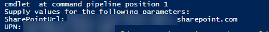
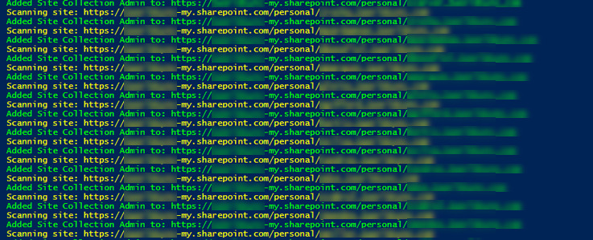
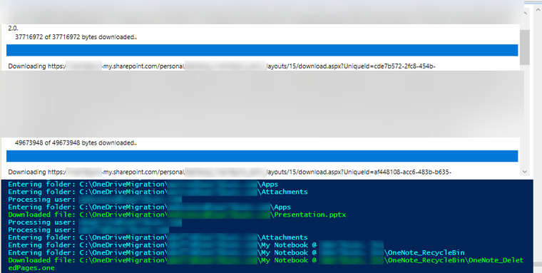
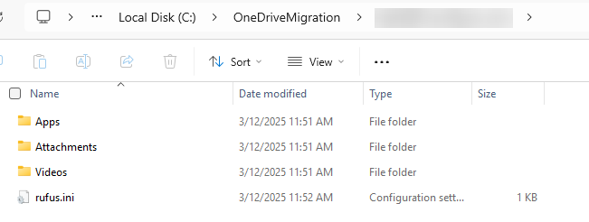

I built this for a tenant migration, where every user's OneDrive had to be exported before the old tenant was closed. It downloads all files from all users' OneDrives and keeps the folder structure.
- Permissions: you need Global Administrator or SharePoint Administrator, and Site Collection Administrator on each OneDrive (step 2). Both scripts are in my script library.
- Time: a large organisation can take hours or days.
- Disk space: at least as much free space as the total size of all OneDrives.
- Ethics and law: this is personal and company data. Follow your organisation's policies and data-protection rules, and get approval before you start.
Step 1: Install the modules
Install-Module Microsoft.Online.SharePoint.PowerShell -Scope CurrentUser
Install-Module Microsoft.Graph.Authentication, Microsoft.Graph.Users, Microsoft.Graph.Files -Scope CurrentUserStep 2: Make yourself Site Collection Admin on every OneDrive
This is the most important step. Even Global and SharePoint admins can't read a user's OneDrive without explicit Site Collection Administrator rights. Add-OneDriveSiteAdmin.ps1 lists every OneDrive in the tenant and adds your account to each one. Run it with -WhatIf first to see the list:
.\Add-OneDriveSiteAdmin.ps1 -AdminUrl https://contoso-admin.sharepoint.com -UserPrincipalName admin@contoso.com -WhatIf
.\Add-OneDriveSiteAdmin.ps1 -AdminUrl https://contoso-admin.sharepoint.com -UserPrincipalName admin@contoso.comAdd-OneDriveSiteAdmin.ps1In the script libraryDownloadShow the full script (92 lines)
<#
.SYNOPSIS
Adds (or removes) one account as Site Collection Administrator on every OneDrive
in the tenant.
.DESCRIPTION
Global and SharePoint administrators cannot open another user's OneDrive until
they are a Site Collection Administrator on it. This script lists every OneDrive
(personal site) in the tenant and grants that right to one account, so a bulk
export such as Export-OneDriveFiles.ps1 can read the files.
When the export is finished, run it again with -Remove to take the access away.
Run it with -WhatIf first to see which OneDrives would change.
.PARAMETER AdminUrl
Your SharePoint admin centre URL, for example https://contoso-admin.sharepoint.com
.PARAMETER UserPrincipalName
The account to add (or remove) as Site Collection Administrator.
.PARAMETER Remove
Removes the account as Site Collection Administrator instead of adding it.
.EXAMPLE
.\Add-OneDriveSiteAdmin.ps1 -AdminUrl https://contoso-admin.sharepoint.com -UserPrincipalName admin@contoso.com -WhatIf
Dry run: lists the OneDrives that would change.
.EXAMPLE
.\Add-OneDriveSiteAdmin.ps1 -AdminUrl https://contoso-admin.sharepoint.com -UserPrincipalName admin@contoso.com -Remove
Takes the access away again after the export.
.NOTES
Author : Kamruzzaman Akib
Module : Microsoft.Online.SharePoint.PowerShell (run it in Windows PowerShell 5.1)
Admin role : SharePoint Administrator or Global Administrator
Access to personal files is sensitive. Get written approval first, and remove
the access as soon as the work is done.
#>
#Requires -Modules Microsoft.Online.SharePoint.PowerShell
[CmdletBinding(SupportsShouldProcess)]
param(
[Parameter(Mandatory)]
[ValidatePattern('^https://[\w-]+-admin\.sharepoint\.[a-z.]+/?$')]
[string]$AdminUrl,
[Parameter(Mandatory)]
[string]$UserPrincipalName,
[switch]$Remove
)
Connect-SPOService -Url $AdminUrl -ErrorAction Stop
Write-Host 'Listing every OneDrive in the tenant. This can take a few minutes...' -ForegroundColor Cyan
$sites = @(Get-SPOSite -IncludePersonalSite $true -Limit All -Filter "Url -like '-my.sharepoint.com/personal/'" -ErrorAction Stop)
Write-Host "Found $($sites.Count) OneDrives." -ForegroundColor Cyan
$grant = -not $Remove
$action = if ($grant) { 'Add as Site Collection Administrator' } else { 'Remove as Site Collection Administrator' }
$changed = 0
$failed = 0
$i = 0
foreach ($site in $sites) {
$i++
Write-Progress -Activity $action -Status $site.Url -PercentComplete ($i / $sites.Count * 100)
if (-not $PSCmdlet.ShouldProcess($site.Url, "$action ($UserPrincipalName)")) { continue }
try {
$null = Set-SPOUser -Site $site.Url -LoginName $UserPrincipalName -IsSiteCollectionAdmin $grant -ErrorAction Stop
$changed++
Write-Verbose "Done: $($site.Url)"
}
catch {
$failed++
Write-Warning "Failed on $($site.Url): $($_.Exception.Message)"
}
}
Write-Progress -Activity $action -Completed
Write-Host ''
Write-Host "OneDrives found : $($sites.Count)"
Write-Host "Changed : $changed" -ForegroundColor Green
if ($failed) { Write-Host "Failed : $failed" -ForegroundColor Red }
if ($grant -and $changed) {
Write-Host 'When the export is finished, run this again with -Remove to take the access away.' -ForegroundColor Yellow
}
Disconnect-SPOServiceThe first version of this script asked for the admin URL and your UPN when it started:


Step 3: Download the files
Export-OneDriveFiles.ps1 walks each OneDrive folder by folder and saves the files under <ExportPath>\<UPN>, keeping the folder structure. I originally had three separate scripts (one user, a CSV list, the whole organisation); this version does all three:
# One user (or several, separated by commas)
.\Export-OneDriveFiles.ps1 -UserPrincipalName alex.wilber@contoso.com -ExportPath D:\OneDriveExport
# Everyone in a CSV file with a UserPrincipalName column
.\Export-OneDriveFiles.ps1 -CsvPath .\users.csv -ExportPath D:\OneDriveExport
# Every member account in the tenant (guests are skipped)
.\Export-OneDriveFiles.ps1 -AllUsers -ExportPath D:\OneDriveExportExport-OneDriveFiles.ps1In the script libraryDownloadShow the full script (181 lines)
<#
.SYNOPSIS
Downloads users' OneDrive files to a local folder, keeping the folder structure.
.DESCRIPTION
Built for a tenant migration, where every OneDrive had to be exported before the
old tenant was closed. Choose who to export in one of three ways:
-UserPrincipalName one or more users
-CsvPath a CSV file with a UserPrincipalName (or UPN) column
-AllUsers every member account in the tenant (guests are skipped)
Each user's files are saved to <ExportPath>\<UPN>\ with the same folders as in
OneDrive. Files that are already there with the same size are skipped, so you can
stop the script and run it again to carry on where it left off.
You must be Site Collection Administrator on each OneDrive first (see
Add-OneDriveSiteAdmin.ps1), otherwise that OneDrive is reported as not accessible.
.PARAMETER UserPrincipalName
One or more users to export.
.PARAMETER CsvPath
A CSV file with a column named UserPrincipalName or UPN.
.PARAMETER AllUsers
Export every member account in the tenant.
.PARAMETER ExportPath
Local folder to save the files in. It is created if it does not exist.
.EXAMPLE
.\Export-OneDriveFiles.ps1 -UserPrincipalName alex.wilber@contoso.com -ExportPath D:\OneDriveExport
.EXAMPLE
.\Export-OneDriveFiles.ps1 -CsvPath .\users.csv -ExportPath D:\OneDriveExport
.EXAMPLE
.\Export-OneDriveFiles.ps1 -AllUsers -ExportPath D:\OneDriveExport
.NOTES
Author : Kamruzzaman Akib
Modules : Microsoft.Graph.Authentication, Microsoft.Graph.Users, Microsoft.Graph.Files
Permissions : Files.Read.All, User.Read.All (delegated)
Replaces my three earlier scripts (single user, CSV list, whole organisation).
OneNote notebooks are listed as not exported: export them from OneNote instead.
Paths longer than 260 characters can fail unless Windows long paths are enabled.
#>
#Requires -Modules Microsoft.Graph.Authentication, Microsoft.Graph.Users, Microsoft.Graph.Files
[CmdletBinding(DefaultParameterSetName = 'User')]
param(
[Parameter(Mandatory, ParameterSetName = 'User')]
[string[]]$UserPrincipalName,
[Parameter(Mandatory, ParameterSetName = 'Csv')]
[ValidateScript({ Test-Path -Path $_ -PathType Leaf })]
[string]$CsvPath,
[Parameter(Mandatory, ParameterSetName = 'All')]
[switch]$AllUsers,
[Parameter(Mandatory)]
[string]$ExportPath
)
$stats = @{ Files = 0; AlreadyThere = 0; Failed = 0; Bytes = 0 }
$notExported = [System.Collections.Generic.List[string]]::new()
function Save-DriveFolder {
param(
[string]$DriveId,
[string]$ItemId,
[string]$LocalPath,
[switch]$IsRoot
)
New-Item -ItemType Directory -Path $LocalPath -Force | Out-Null
try {
# -All follows paging. Without it, folders with more than 200 items are cut short.
$children = Get-MgDriveItemChild -DriveId $DriveId -DriveItemId $ItemId -All -ErrorAction Stop
}
catch {
if ($IsRoot) { throw }
$script:stats.Failed++
Write-Warning "Could not list $($LocalPath): $($_.Exception.Message)"
return
}
foreach ($item in $children) {
$target = Join-Path -Path $LocalPath -ChildPath $item.Name
if ($item.Folder) {
Save-DriveFolder -DriveId $DriveId -ItemId $item.Id -LocalPath $target
}
elseif ($item.File) {
if ((Test-Path -LiteralPath $target) -and (Get-Item -LiteralPath $target).Length -eq $item.Size) {
$script:stats.AlreadyThere++
continue
}
try {
Get-MgDriveItemContent -DriveId $DriveId -DriveItemId $item.Id -OutFile $target -ErrorAction Stop
$script:stats.Files++
$script:stats.Bytes += $item.Size
Write-Verbose "Downloaded $target"
}
catch {
$script:stats.Failed++
Write-Warning "Could not download $($target): $($_.Exception.Message)"
}
}
else {
# OneNote notebooks and other packages are not plain files
$notExported.Add($target)
}
}
}
# --- Connect and work out who to export --------------------------------------
Connect-MgGraph -Scopes 'Files.Read.All', 'User.Read.All' -NoWelcome -ErrorAction Stop
switch ($PSCmdlet.ParameterSetName) {
'User' {
$upns = $UserPrincipalName
}
'Csv' {
$rows = @(Import-Csv -Path $CsvPath)
if ($rows.Count -eq 0) { throw "The CSV file '$CsvPath' is empty." }
$column = $rows[0].PSObject.Properties.Name |
Where-Object { $_ -in 'UserPrincipalName', 'UPN' } |
Select-Object -First 1
if (-not $column) { throw 'The CSV file needs a column named UserPrincipalName or UPN.' }
$upns = $rows.$column | Where-Object { $_ } | ForEach-Object { $_.Trim() }
}
'All' {
$upns = Get-MgUser -All -Filter "userType eq 'Member'" -Property UserPrincipalName -ErrorAction Stop |
Select-Object -ExpandProperty UserPrincipalName
}
}
$upns = @($upns | Sort-Object -Unique)
Write-Host "Users to export: $($upns.Count)" -ForegroundColor Cyan
New-Item -ItemType Directory -Path $ExportPath -Force | Out-Null
# --- Export each OneDrive ----------------------------------------------------
$usersDone = 0
$usersSkipped = [System.Collections.Generic.List[string]]::new()
$i = 0
foreach ($upn in $upns) {
$i++
Write-Progress -Activity 'Exporting OneDrives' -Status "$upn ($i of $($upns.Count))" -PercentComplete ($i / $upns.Count * 100)
try {
$drive = Get-MgUserDefaultDrive -UserId $upn -ErrorAction Stop
Write-Host "Exporting $upn" -ForegroundColor Cyan
Save-DriveFolder -DriveId $drive.Id -ItemId 'root' -LocalPath (Join-Path -Path $ExportPath -ChildPath $upn) -IsRoot
$usersDone++
}
catch {
$usersSkipped.Add($upn)
Write-Warning "Skipped $($upn): no OneDrive, or you are not Site Collection Administrator on it. $($_.Exception.Message)"
}
}
Write-Progress -Activity 'Exporting OneDrives' -Completed
# --- Summary -----------------------------------------------------------------
Write-Host ''
Write-Host "Users exported : $usersDone of $($upns.Count)" -ForegroundColor Green
Write-Host "Files downloaded : $($stats.Files) ($([math]::Round($stats.Bytes / 1GB, 2)) GB)"
Write-Host "Already there : $($stats.AlreadyThere)"
if ($stats.Failed) { Write-Host "Failed : $($stats.Failed) (see the warnings above, then run again)" -ForegroundColor Red }
if ($usersSkipped.Count) {
Write-Host "Users skipped : $($usersSkipped -join ', ')" -ForegroundColor Yellow
}
if ($notExported.Count) {
Write-Host "Not exported (OneNote notebooks or other packages): $($notExported.Count)" -ForegroundColor Yellow
$notExported | ForEach-Object { Write-Host " $_" }
}
Write-Host "Files are in $((Resolve-Path -Path $ExportPath).Path)"
Disconnect-MgGraph | Out-NullWhat changed from my first version:
- Large folders are complete. Graph returns folder contents in pages, and the first version only read the first page, so a folder with hundreds of files could be cut short. It now reads every page.
- You can resume. Files that are already downloaded with the same size are skipped, so a run that stops halfway can simply be started again.
- Fewer permissions. It asks only for
Files.Read.AllandUser.Read.All. - A summary at the end with the number of files, the total size, any failures and any OneNote notebooks, which need exporting from OneNote itself.

Each user gets their own folder with the same structure as in OneDrive:

Step 4: Remove your access again
When the export is checked and handed over, take your Site Collection Administrator rights away so you aren't left with access to everyone's files:
.\Add-OneDriveSiteAdmin.ps1 -AdminUrl https://contoso-admin.sharepoint.com -UserPrincipalName admin@contoso.com -Remove